Coursework 4 JSON data interchange syntax [P0]
部分实现ECMA-404标准（一种用于数据交换的结构化文本语法）的应用
主要任务：
1.定义一个合适的数据类型来表示这种数据交换格式的抽象语法树
2.并定义一些对这个表示进行操作的函数。
JSON data interchange syntax [P0]
JSON 数据交换语法
目标：定义Ecma类型来表示ECMA-404交换格式的可能值，并创建一些基础函数来构建ECMA-404数据结构。
Task 1 [P0]
目标：定义Ecma类型来表示ECMA-404交换格式的可能值，并创建一些基础函数来构建ECMA-404数据结构。
let mkObject () = Object[] [P0]
- let mkObject ()：定义一个名为mkObject的函数，没有参数（除了隐含的unit类型参数）。
- = Object []：函数返回一个Ecma类型的值，此处为Object构造器，带有一个空列表（[]），表示一个空的JSON对象。
let mkNumber f = Number f [P1]
- let mkNumber f：定义一个名为mkNumber的函数，接受一个浮点数f作为参数。
- = Number f：返回一个Ecma类型的值，使用Number构造器，其值为f。
let mkBool b = Bool b [P1]
- let mkBool b：定义一个名为mkBool的函数，接受一个布尔值b作为参数。
- = Bool b：返回一个Ecma类型的值，使用Bool构造器，其值为b。
let mkString s：定义一个名为mkString的函数，接受一个字符串s作为参数。 = String s：返回一个Ecma类型的值，使用String构造器，其值为s。
let mkString s = String s [P1]
- let mkString s：定义一个名为mkString的函数，接受一个字符串s作为参数。
- = String s：返回一个Ecma类型的值，使用String构造器，其值为s。
let mkArray ele = Array ele [P1]
- let mkArray ele：定义一个名为mkArray的函数，接受一个Ecma类型列表ele作为参数。
- = Array ele：返回一个Ecma类型的值，使用Array构造器，其值为ele。
let mkNull () = Null [P1]
- let mkNull ()：定义一个名为mkNull的函数，没有参数（除了隐含的unit类型参数）。
- = Null：返回一个Ecma类型的值，使用Null构造器，表示JSON中的null值。
Task 2 [P1]
- 目标：定义两个函数来修改ECMA对象和数组表示。
- 编码思路：为对象添加键值对，为数组添加元素。
- 代码详解：
- let addNameValue (n, v) e：如果e是对象，将键值对(n, v)添加到该对象中，否则保持e不变。
- let addValue v e：如果e是数组，将值v添加到数组中，否则保持e不变。
addNameValue (n, v) e
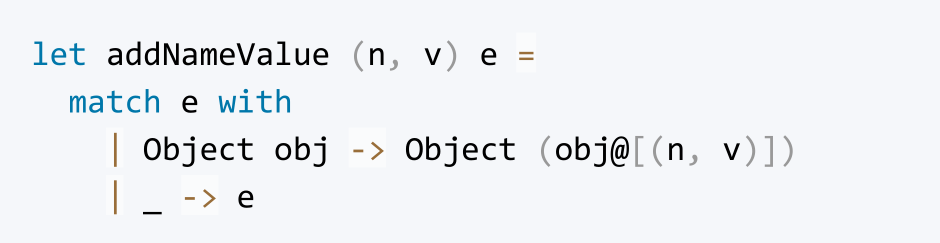 [P1]
- let addNameValue (n, v) e：定义一个名为addNameValue的函数，接受一个键值对(n, v)和一个Ecma类型的值e作为参数。
- match e with：使用模式匹配来检查e的类型。
- | Object obj -> Object (obj @ [(n, v)])：如果e是一个Object，将键值对(n, v)添加到对象列表obj中，并返回新的Object。
- | _ -> e：如果e不是一个Object，保持e不变。
addValue v e
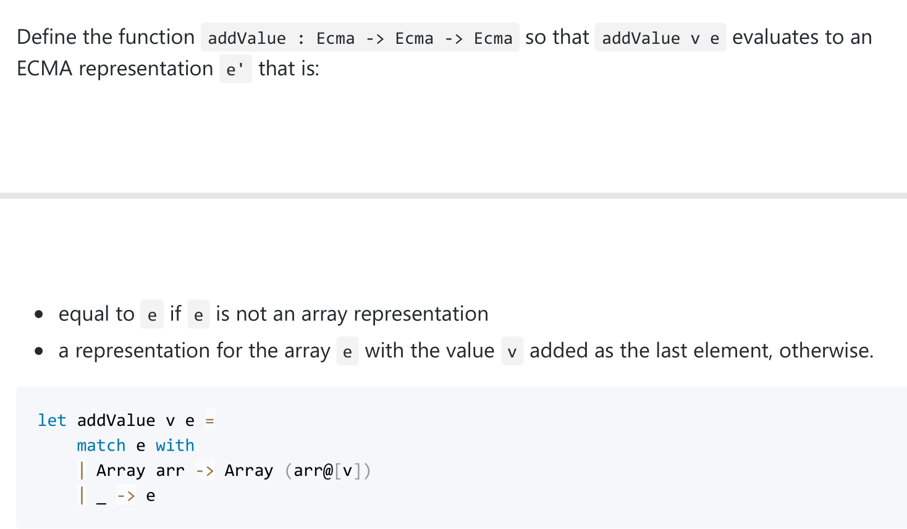 [P1]
- let addValue v e：定义一个名为addValue的函数，接受一个Ecma类型的值v和另一个Ecma类型的值e作为参数。
- match e with：使用模式匹配来检查e的类型。
- | Array arr -> Array (arr @ [v])：如果e是一个Array，将值v添加到数组列表arr中，并返回新的Array。
- | _ -> e：如果e不是一个Array，保持e不变。
Task3 Count Value
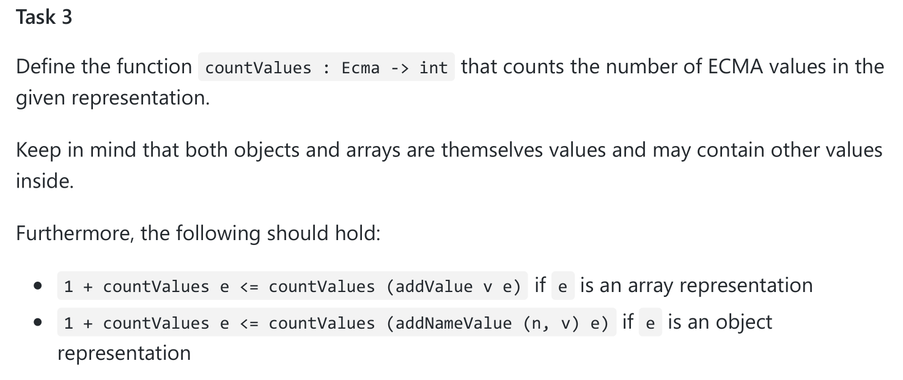 [P2]
- 目标：定义一个函数来计算给定ECMA表示中的值数量。
- 编码思路：递归地遍历对象或数组，并计算其中的值。
- 代码详解：
- let rec countValues (e: Ecma) : int：根据e的类型（对象、数组或其他），递归地计算其中的值数量。
countValues : Ecma -> int
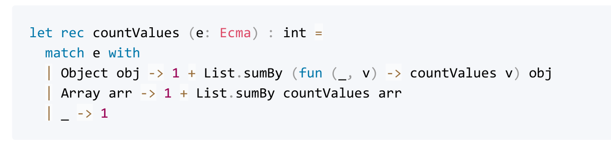 [P2]
- let rec countValues (e: Ecma) : int：定义一个递归函数countValues，接受一个Ecma类型的值e作为参数，返回一个整数。
- match e with：使用模式匹配来检查e的类型。
- | Object obj ->：如果e是一个对象，计算对象中所有值的数量。
- 1 + List.sumBy (fun (_, v) -> countValues v) obj：对于对象中的每个键值对，递归调用countValues计算值的数量，然后将这些数量加起来，并加上1（代表对象本身）。
- | Array arr ->：如果e是一个数组，计算数组中所有值的数量。
- 1 + List.sumBy countValues arr：对于数组中的每个元素，递归调用countValues计算其值的数量，然后将这些数量加起来，并加上1（代表数组本身）。
- | _ -> 1：对于其他类型（数字、布尔值、字符串、空值），它们自身就是一个值，因此返回1。
List.sumBy
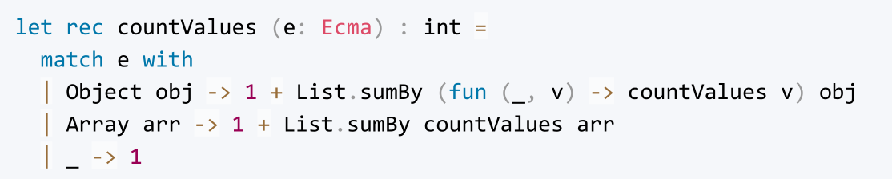 [P2]
List.sumBy 是 F# 中的一个函数，它的作用是对列表中的每个元素应用一个函数，并将结果相加。在你的代码中，List.sumBy (fun (_, v) -> countValues v) obj 的作用是对 obj 中的每个键值对，取值部分应用 countValues 函数，并将结果相加。这样做的效果是计算对象中嵌套的值的总数。
Task4 值的完整路径
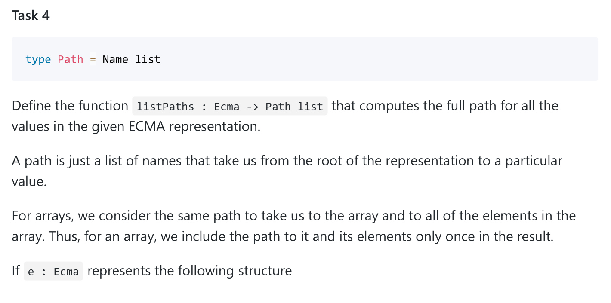 [P2]
- 目标：定义一个函数来计算给定ECMA表示中所有值的完整路径。
- 编码思路：递归地遍历对象或数组，并记录到每个值的路径。
- 代码详解：
- let rec paths e：递归函数，为对象或数组中的每个元素生成路径。
- let listPaths (ecma: Ecma) : List<Path>：使用paths函数生成给定ECMA表示中所有值的路径列表。
注意事项
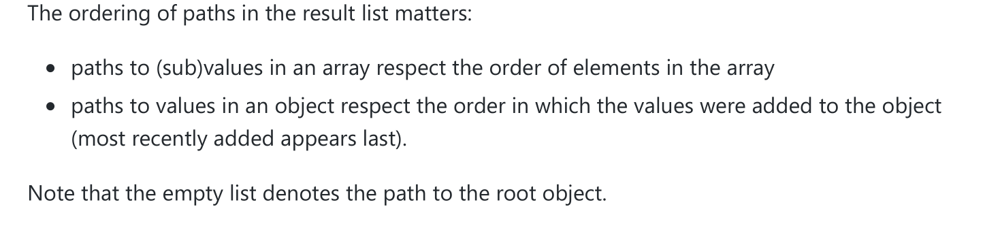 [P3]
对象中值的路径遵循将值添加到对象的顺序（最近添加的出现在最后）
listPaths : Ecma -> Path list
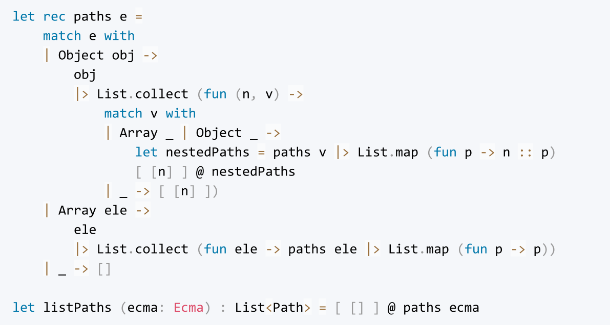 [P4]
- let rec paths e：定义一个递归辅助函数paths，用于计算给定ECMA表示中所有值的路径。
- match e with：使用模式匹配来检查e的类型。
- | Object obj ->：如果e是一个对象，计算对象中所有值的路径。
- 使用List.collect遍历对象的每个键值对。
- 如果值是对象或数组，递归调用paths并将当前键名添加到每个返回的路径前面，构造新的路径。
- 如果值是其他类型，返回仅包含当前键名的路径。
- | Array ele ->：如果e是一个数组，计算数组中所有值的路径。
- 使用List.collect遍历数组的每个元素，并递归调用paths。
- | _ -> []：对于其他类型，不包含任何子路径，返回空列表。
List.collect, List.map \>
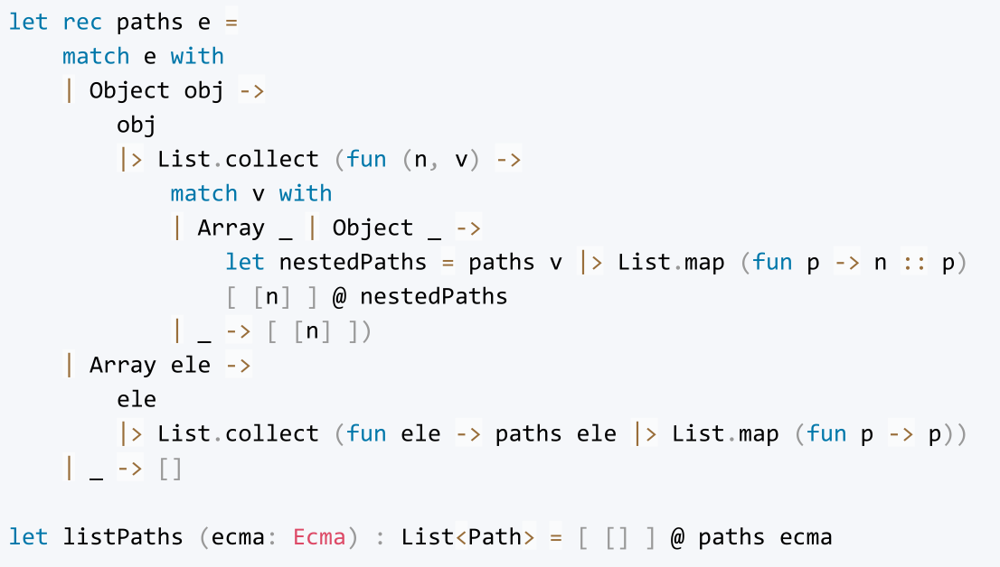 [P4]
List.collect：在 F# 中，List.collect 是一个用于将函数应用到列表的每个元素并收集结果的函数。它会将每个元素的映射结果展平成一个单一的列表。
List.map：List.map 是 F# 中的函数，它接受一个函数和一个列表，并将该函数应用于列表中的每个元素，返回一个包含映射结果的新列表。
|>：这是 F# 中的管道操作符，它用于将左侧表达式的结果传递给右侧的函数。
Task 5 生成给定ECMA表示的字符串表示形式
[P4]
- 目标：定义一个函数来生成给定ECMA表示的字符串表示形式。
- 编码思路：递归地遍历ECMA表示，并根据其类型转换为字符串。
- 代码详解：
- let rec show (e: Ecma) : string：根据e的类型（空值、布尔值、数字、字符串、数组或对象），生成其字符串表示。
show : Ecma -> string
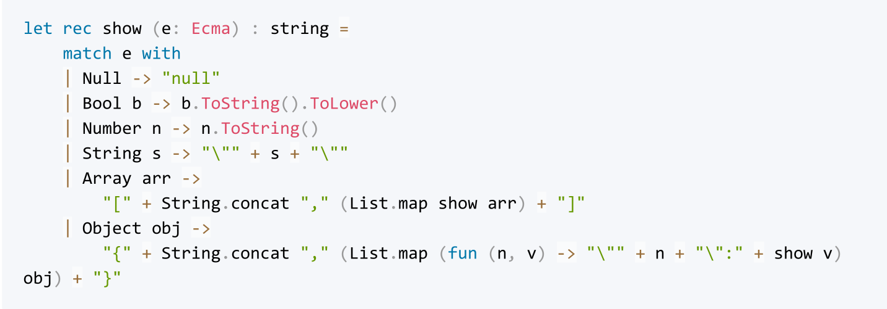 [P4]
- let rec show (e: Ecma) : string：定义了一个递归函数 show，它接受一个 Ecma 类型的数据 e 并返回一个字符串。
- match e with：使用模式匹配来检查 e 的类型。
- | Null -> "null"：如果 e 是 Null 类型，则返回字符串 "null"。
- | Bool b -> b.ToString().ToLower()：如果 e 是 Bool 类型，将布尔值 b 转换为小写的字符串形式（例如，true 转换为 "true"）。
- | Number n -> n.ToString()：如果 e 是 Number 类型，将数字 n 转换为字符串形式。
- | String s -> "\"" + s + "\""：如果 e 是 String 类型，将字符串 s 用引号包围，形成 JSON 字符串。
- | Array arr -> "[" + String.concat "," (List.map show arr) + "]"：如果 e 是 Array 类型，递归地对数组的每个元素调用 show 函数，然后将结果用逗号连接，并用方括号包围。
- | Object obj -> "{" + String.concat "," (List.map (fun (n, v) -> "\"" + n + "\":" + show v) obj) + "}"：如果 e 是 Object 类型，对对象中的每个键值对进行处理，递归地对值调用 show 函数，并将键和值以 "key":"value" 形式组合，最后用逗号连接并用花括号包围。
Task 6 删除指定路径的值
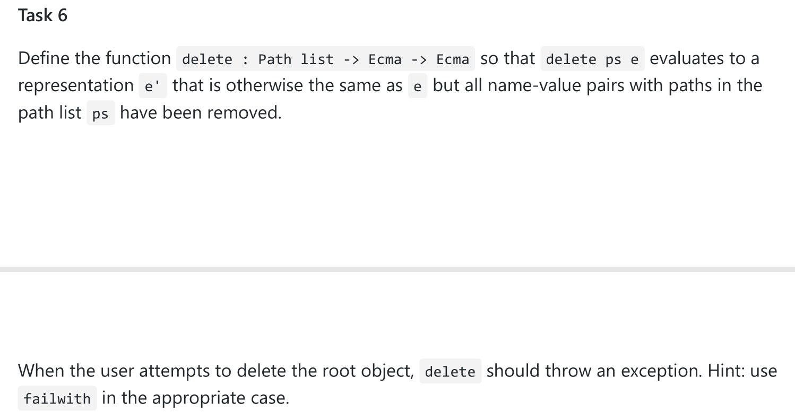 [P4]
- 目标：定义一个函数来从给定的ECMA表示中删除指定路径的值。
- 编码思路：沿着指定路径遍历ECMA表示，移除对应的值。
- 代码详解：
- let rec delAtPath p (e: Ecma)：递归地沿路径p遍历ECMA表示e，删除对应值。
- let delete ps e：使用delAtPath函数删除e中所有指定路径ps上的值。
delete : Path list -> Ecma -> Ecma
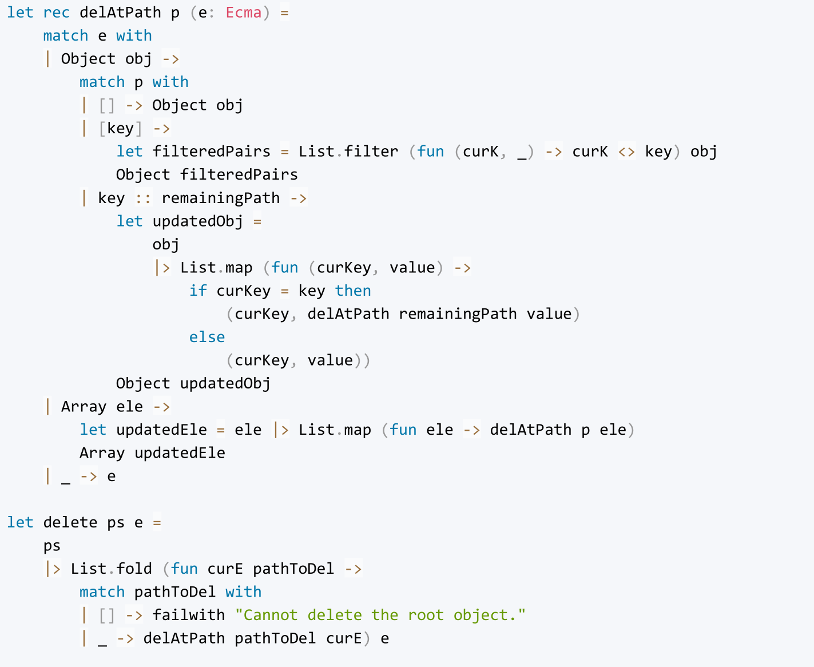 [P5]
- let rec delAtPath p (e: Ecma)：定义了一个递归函数 delAtPath，用于删除路径 p 上的值。
- match e with：使用模式匹配来检查 e 的类型。
- | Object obj ->：如果 e 是 Object 类型，处理对象。
- match p with：再次使用模式匹配来检查路径 p。
- | [] -> Object obj：如果路径为空，不进行任何操作。
- | [key] ->：如果路径只有一个键，移除该键。
- let filteredPairs = List.filter (fun (curK, _) -> curK <> key) obj：过滤掉对象中与给定键相同的键值对。
- Object filteredPairs：返回更新后的对象。
- | key :: remainingPath ->：如果路径有多个键，处理嵌套的对象。
- let updatedObj = obj |> List.map ...：更新对象，对每个键值对进行检查和递归处理。
- if curKey = key then (curKey, delAtPath remainingPath value) else (curKey, value)：如果当前键匹配路径上的键，则递归调用 delAtPath，否则保持键值对不变。
- | Array ele ->：如果 e 是 Array 类型，递归地对数组的每个元素调用 delAtPath。
- let delete ps e：定义了 delete 函数。
- ps |> List.fold ...：对路径列表 ps 中的每个路径进行处理。
- match pathToDel with | [] -> failwith "Cannot delete the root object."：如果尝试删除根对象（空路径），抛出异常。
- | _ -> delAtPath pathToDel curE：对于非空路径，调用 delAtPath 删除路径上的值。
List.filter
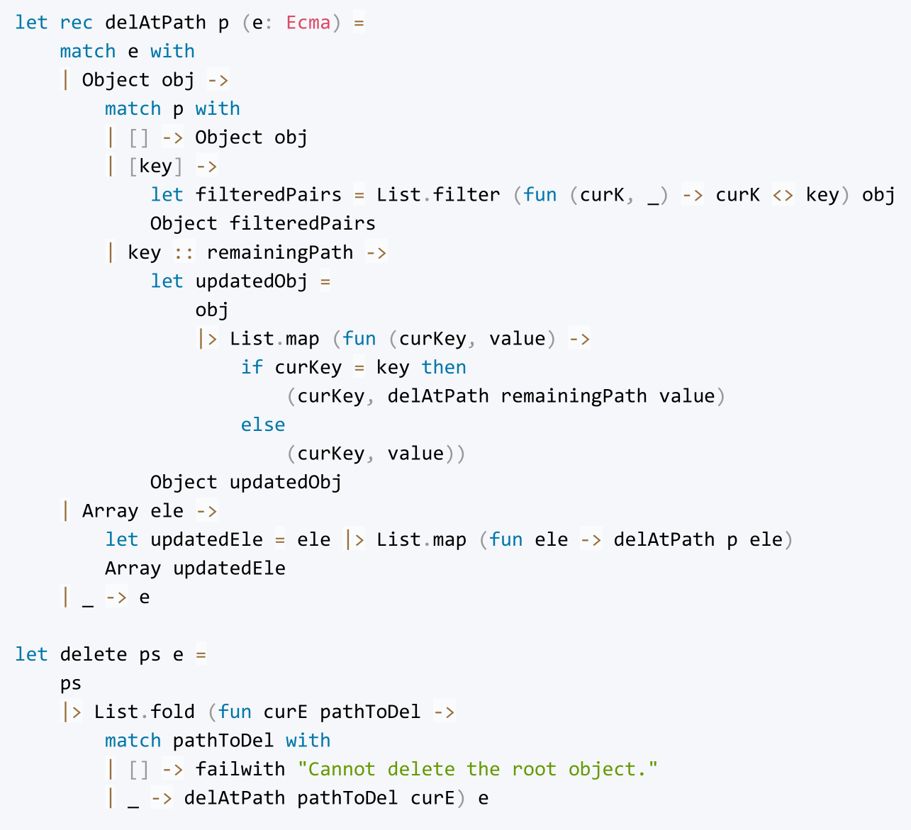 [P5]
List.filter 是 F# 中的一个函数，它的作用是对列表进行过滤，返回满足指定条件的元素组成的新列表。
在给定的列表中，List.filter 接受一个判定条件的函数，并返回一个新列表，其中只包含原列表中满足条件的元素。在上述代码中，List.filter (fun (curK, _) -> curK <> key) obj 的作用是从对象 obj 的键值对列表中过滤掉键等于 key 的那对键值对，从而得到一个新的键值对列表。
withPath : Path list -> Ecma -> Ecma list
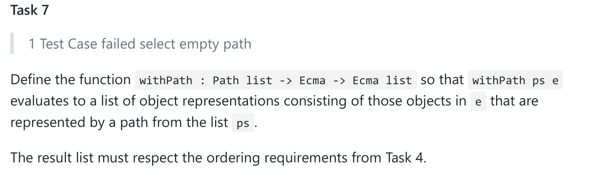 [P5]
1错误 选择空路径
- 目标：定义一个函数来查找给定ECMA表示中指定路径的对象表示。
- 编码思路：沿着指定路径遍历ECMA表示，收集对应的对象表示。
- 代码详解：
- let rec findValAtPath (p : Path) (e : Ecma) : Ecma list：递归地沿路径p查找ECMA表示e中的值。
- let withPath (ps : Path list) (e : Ecma) : Ecma list：使用findValAtPath函数查找e中所有指定路径ps上的对象表示。
withPath : Path list -> Ecma -> Ecma list
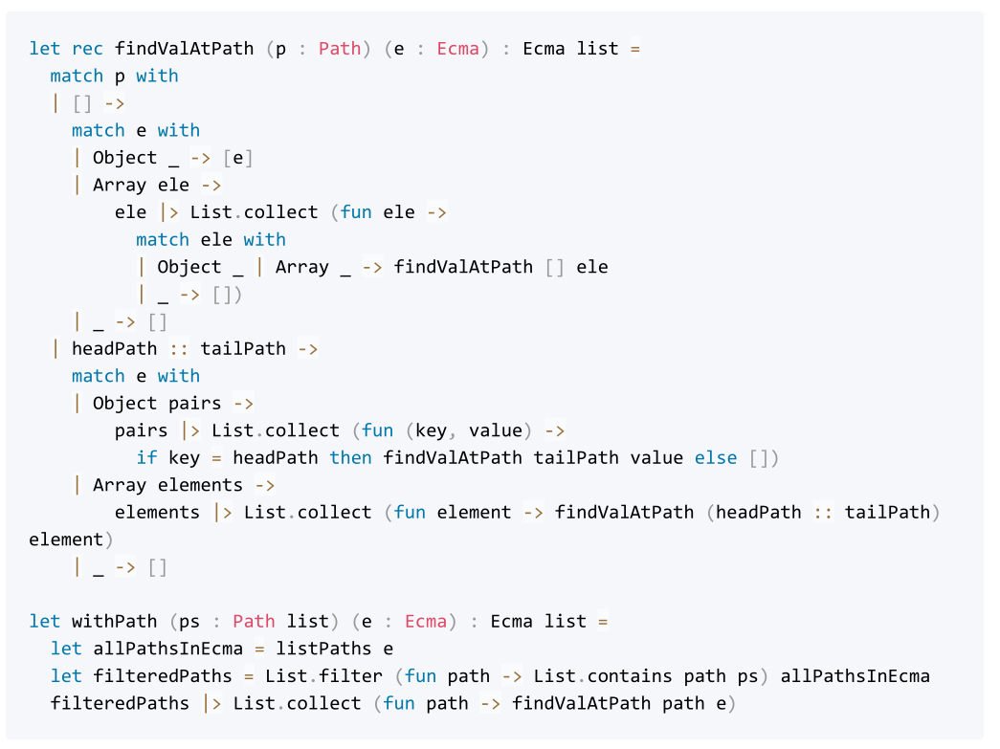 [P6]
- let rec findValAtPath (p : Path) (e : Ecma)：定义了一个递归函数 findValAtPath，用于查找路径 p 上的值。
- match p with：使用模式匹配来检查路径 p。
- | [] ->：如果路径为空，根据 e 的类型进行处理。
- | Object _ -> [e]：如果是对象，返回对象本身。
- | Array ele ->：如果是数组，递归地处理数组的每个元素。
- | headPath :: tailPath ->：如果路径不为空，处理嵌套的对象或数组。
- match e with：使用模式匹配来检查 e 的类型。
- | Object pairs ->：如果是对象，遍历键值对。
- pairs |> List.collect (fun (key, value) -> ...)：对每个键值对进行处理，递归查找值。
- | Array elements ->：如果是数组，递归地对数组的每个元素调用 findValAtPath。
- let withPath (ps : Path list) (e : Ecma)：定义了 withPath 函数。
- let allPathsInEcma = listPaths e：获取 e 中所有可能的路径。
- let filteredPaths = List.filter ...：过滤出与指定路径列表 ps 匹配的路径。
- filteredPaths |> List.collect ...：对过滤后的路径使用 findValAtPath 函数，收集对应的对象表示。
CW 5 F#版本的JSON 数据结构
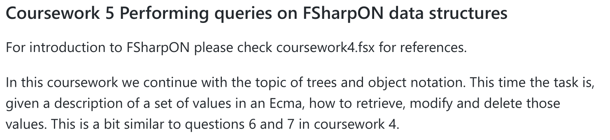 [P6]
对FSharpON（F#版本的JSON）数据结构的查询、修改和删除操作。通过定义不同的表达式和选择器（selectors），将在FSharpON结构中进行复杂的数据操作
Task 1 BExpr类型
[P10]
- 目标：定义几个BExpr类型的值和Selector类型的值，以符合特定的逻辑条件。
- 实现思路：
- 使用HasKey、HasStringValue等构造器在BExpr类型中表示特定的逻辑条件。
- 使用Match、Sequence、OneOrMore等构造器在Selector类型中定义如何从FSharpON结构中选择数据。
- 代码功能：
- b1、b2、b3：根据特定的条件（如键的存在、数值范围、字符串值等）来构造布尔表达式。
- s1、s2、s3：定义了选择数据的复杂规则，例如选择特定深度或满足某些条件的数据。
let b1 = And(HasKey "blue", And(HasKey "left", Not(HasKey "red")))
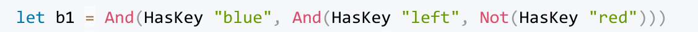 [P11]
And(HasKey "blue", And(HasKey "left", Not(HasKey "red"))): 这个表达式表示一个组合条件。
- HasKey "blue": 检查Ecma对象是否有一个键为"blue"的项。
- HasKey "left": 检查Ecma对象是否有一个键为"left"的项。
- Not(HasKey "red"): 检查Ecma对象是否没有一个键为"red"的项。
- And: 将这些条件组合在一起，确保所有这些条件都得到满足
Task 2 eval函数 布尔值
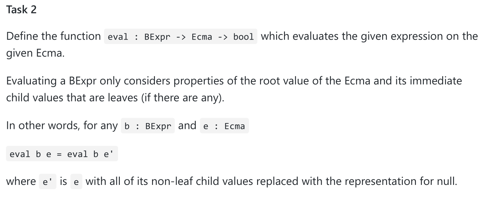 [P11]
- 目标：定义eval函数，用于计算BExpr表达式在给定的Ecma数据上的布尔值。
- 实现思路：
- 根据BExpr表达式的不同情况，递归地计算其在Ecma数据上的布尔值。
- 针对Ecma数据的不同类型（如对象、数组、字符串等）进行条件判断。
- 代码功能：
- 根据BExpr的构造器（如Not、And、HasKey等）对Ecma数据进行评估，并返回布尔值。
HasKey k
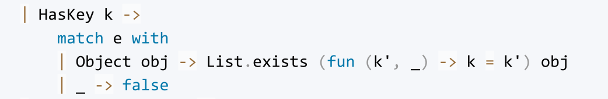 [P12]
- HasKey k：当BExpr是HasKey k且Ecma值是一个对象时，函数检查该对象是否包含键k。这通过遍历对象的键值对列表并检查是否存在键等于k的元素来实现。
- HasKey k：如果Ecma值不是对象，函数返回false，因为非对象类型的Ecma值不包含键。
HasStringValue s
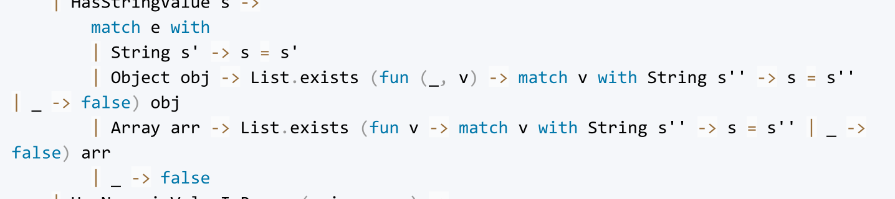 [P12]
- HasStringValue s：如果Ecma值是对象，函数遍历对象的键值对，检查是否有任何值是字符串且等于s。
- HasStringValue s：如果Ecma值是数组，函数类似地遍历数组的元素，检查是否有元素是字符串且等于s。
- HasStringValue s：对于其他类型的Ecma值，由于它们不是字符串，函数返回false。
Task 3 Select
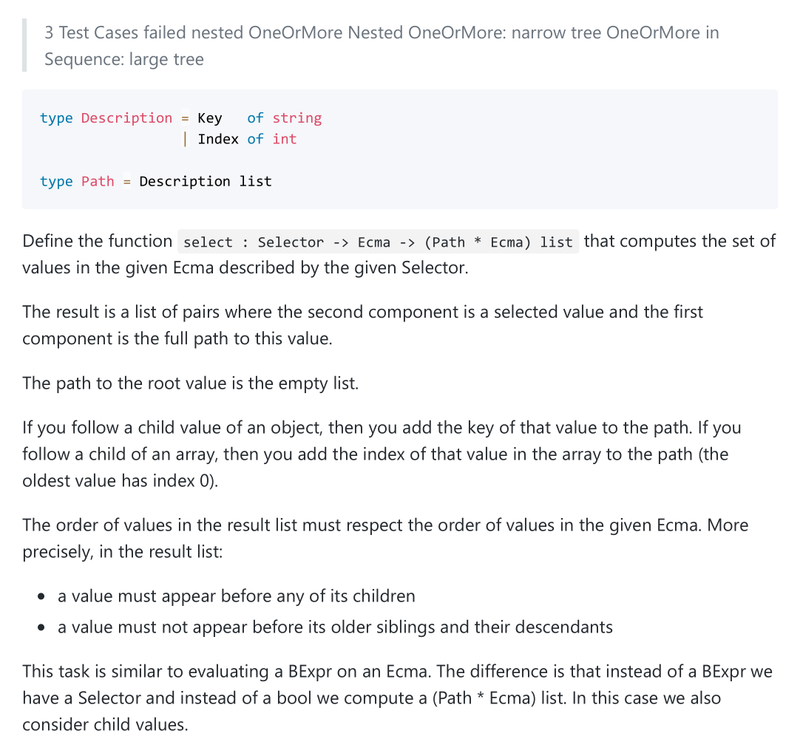 [P13]
- 目标：定义select函数，根据Selector在Ecma数据结构中选择数据。
- 实现思路：
- 在Ecma结构中遍历，根据Selector的定义选择数据。
- 对于对象和数组类型的数据，递归地处理其子元素。
- 代码功能：
- 根据Selector选择Ecma结构中的数据，同时收集数据的路径信息。
matchWithChildren 辅助函数
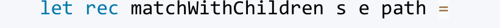 [P14]
matchWithChildren 辅助函数
- let rec matchWithChildren s e path = ...：这是一个辅助函数，用于处理Ecma结构中的对象（Object）和数组（Array）。
- match e with ...：这里使用模式匹配来处理不同类型的Ecma值。
对于Object类型
[P14]
对于Object类型
- | Object fields -> fields |> List.collect (fun (k, v) -> selectHelper s v (path @ [Key k]))：如果Ecma是一个对象，函数遍历对象中的所有字段。对于每个字段，它使用selectHelper来处理字段值，并更新路径来包含当前字段的键。
对于Array类型
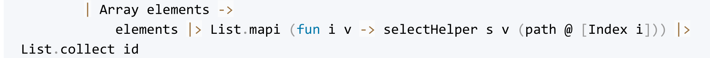 [P14]
对于Array类型
- | Array elements -> elements |> List.mapi (fun i v -> selectHelper s v (path @ [Index i])) |> List.collect id：如果Ecma是一个数组，函数对数组中的每个元素执行类似的操作，更新路径来包含元素的索引。
List.mapi
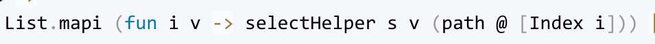 [P14]
List.mapi 是 F# 中的一个函数，它用于对列表中的每个元素应用一个函数，并且这个函数可以使用元素的索引。List.mapi 的行为类似于 List.map，但它提供了两个参数给应用的函数：元素的索引（从 0 开始）和元素本身。
简单来说，如果你有一个列表 [a; b; c; ...]，并且你使用 List.mapi 应用函数 f 到这个列表，那么结果将是一个新列表，其中第一个元素是 f 0 a（即使用索引 0 和元素 a 调用 f）
Task 4
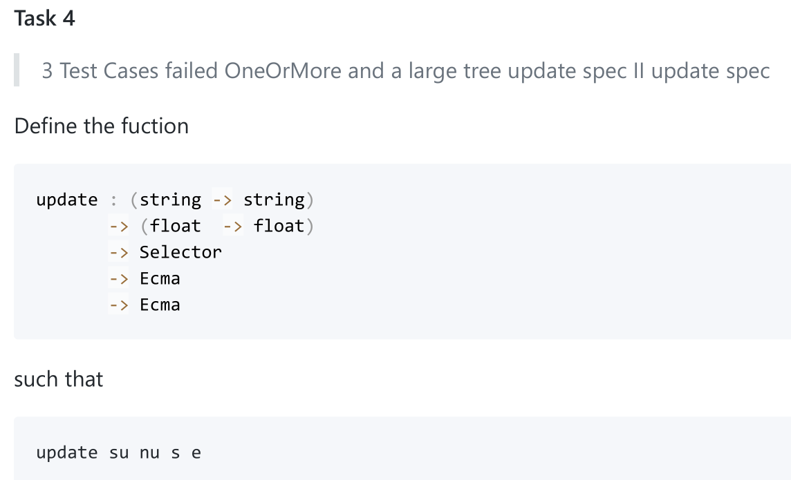 [P14]
- 实现需求：实现一个update函数，用于更新FsharpON数据中特定元素的值。
- 编码思路：
- 使用select函数找到需要更新的元素。
- 应用提供的更新规则（对字符串和浮点数的函数）来修改这些元素。
- 代码作用：此函数用于根据特定规则更新FsharpON数据结构中的元素。
doUpdate
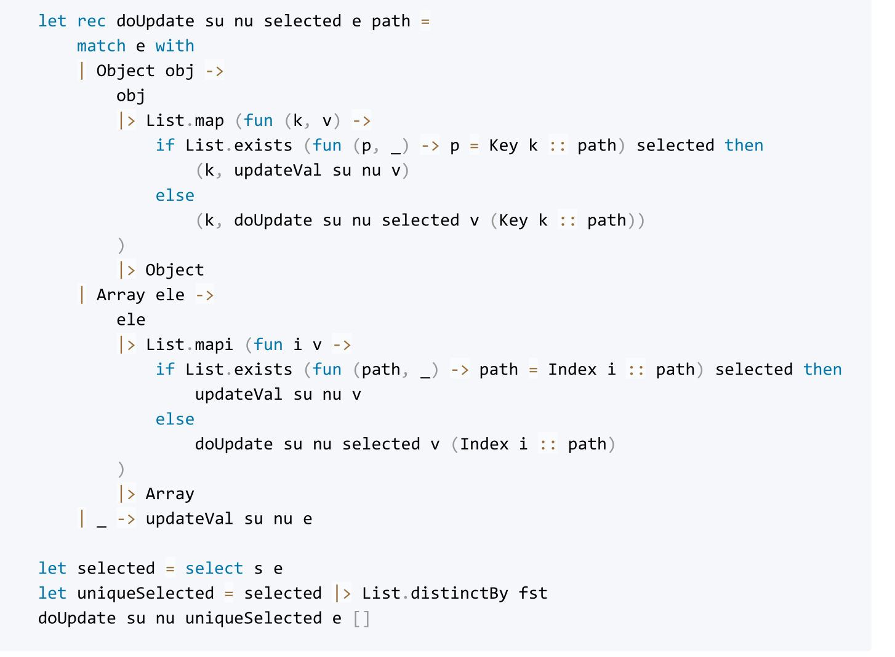 [P15]
函数 doUpdate
这个递归函数负责进行实际的更新操作。它遍历FsharpON数据结构，并根据选择器选中的元素来更新值。
参数
- su: 一个函数，用于更新字符串值。
- nu: 一个函数，用于更新浮点数值。
- selected: 一个包含路径和元素的列表，这些元素是根据选择器从FsharpON数据结构中选出来的。
- e: 当前正在处理的FsharpON元素。
- path: 当前元素在数据结构中的路径。
逻辑
- 匹配对象 (Object obj): 如果当前元素是一个对象，那么遍历对象中的每一个键值对。
- 如果当前键值对的路径在selected列表中，那么应用su和nu函数来更新这个值。
- 否则，递归调用doUpdate来处理这个键值对的值。
- 匹配数组 (Array ele): 如果当前元素是一个数组，那么遍历数组中的每一个元素。
- 如果当前元素的索引在selected列表中，那么应用su和nu函数来更新这个元素。
- 否则，递归调用doUpdate来处理这个数组元素。
- 其他情况: 直接应用su和nu函数来更新当前元素。
选择要更新的元素
- let selected = select s e: 使用select函数和提供的选择器s来找出要更新的元素。
- let uniqueSelected = selected |> List.distinctBy fst: 确保选出的元素是唯一的，避免重复处理。
调用 doUpdate
[P15]
调用 doUpdate
- doUpdate su nu uniqueSelected e []: 从根元素开始，使用doUpdate函数来更新数据结构中的元素。
总结来说，这段代码的目的是根据提供的选择器来查找FsharpON数据结构中需要更新的元素，然后使用提供的函数来更新这些元素的值。这个更新过程是递归进行的，确保整个数据结构中的所有相关元素都被适当地更新。
Task 5 delete
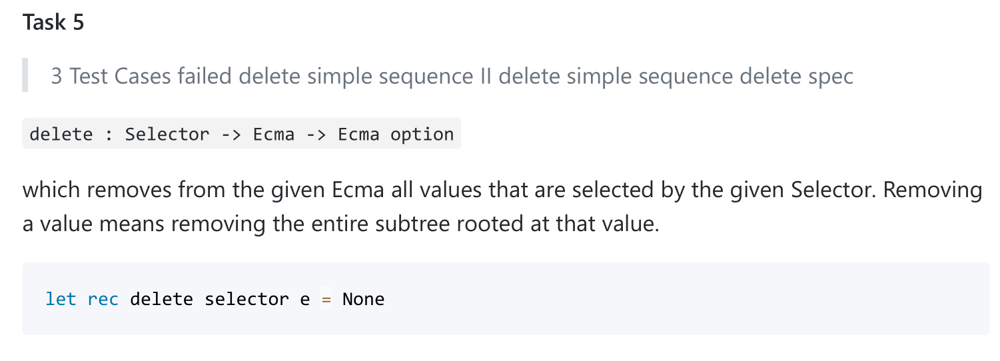 [P15]
- 实现需求：定义delete函数，用于删除FsharpON数据中符合特定选择器条件的元素。
- 编码思路：
- 使用select函数找到要删除的元素。
- 从FsharpON数据结构中移除这些元素及其子树。
- 代码作用：此函数用于从FsharpON数据结构中删除特定元素。
Task 6 toZerro truncate
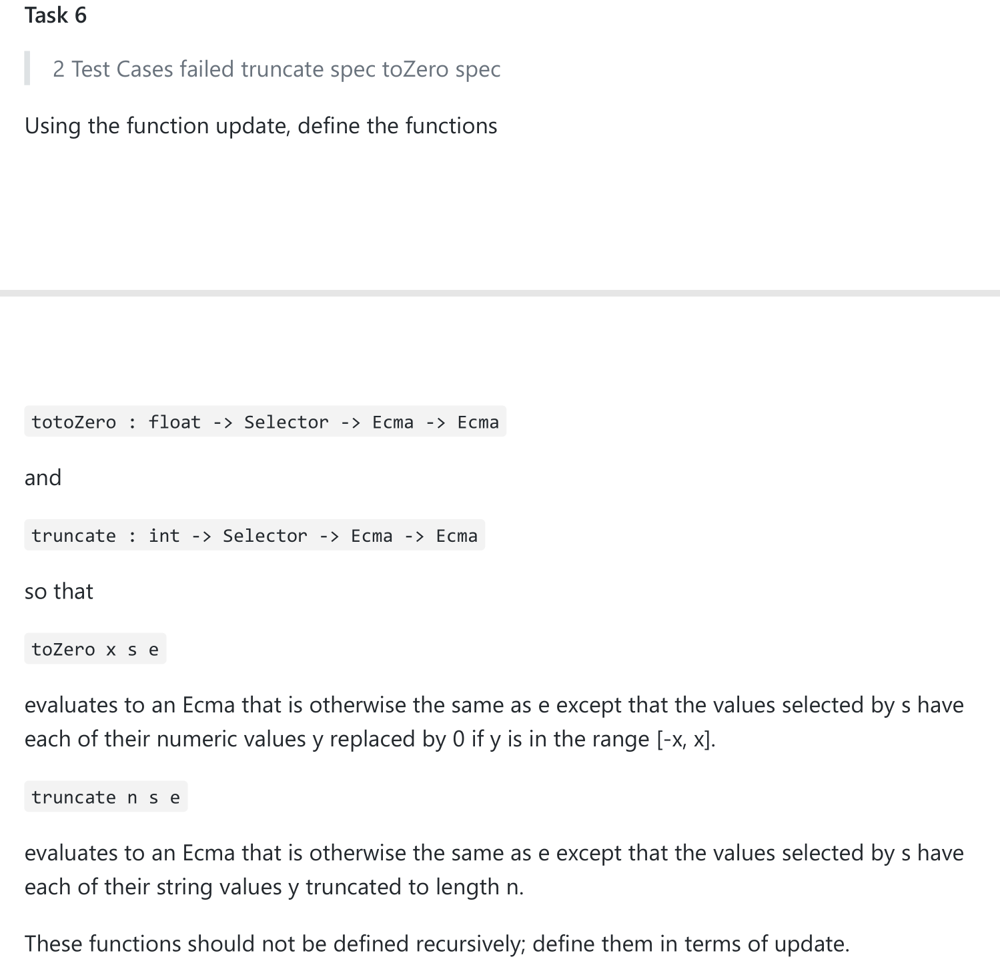 [P15]
任务 6
- 实现需求：定义toZero和truncate函数，分别用于将FsharpON数据中的数值归零和截断字符串。
- 编码思路：
- 利用update函数来实现这两个操作。
- toZero将指定范围内的数值设置为0，truncate将字符串截断到指定长度。
- 代码作用：这两个函数用于特定条件下修改FsharpON数据结构中的数值或字符串。
Task 7 mapEcma
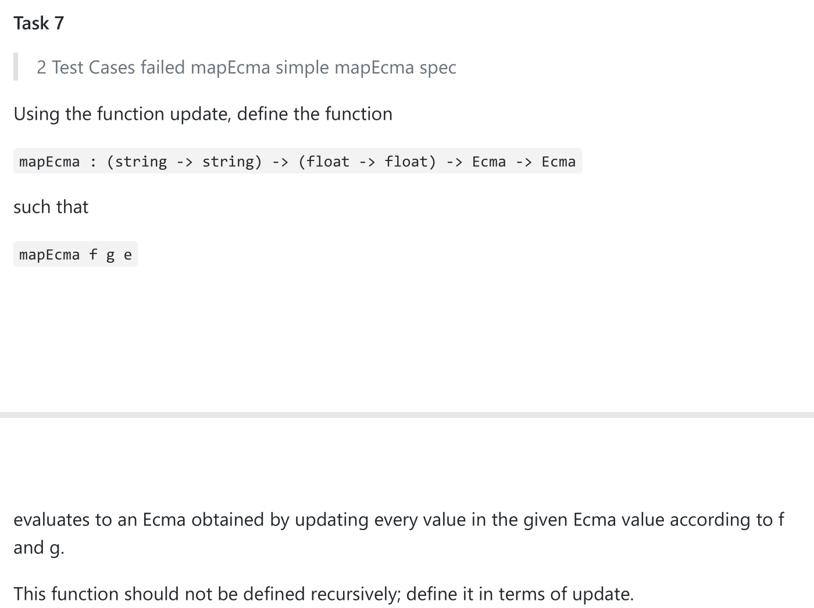 [P16]
- 实现需求：定义mapEcma函数，用于更新FsharpON数据结构中的所有值。
- 编码思路：
- 使用update函数，配合将所有值都选中的选择器。
- 应用给定的字符串和浮点数的函数来更新所有值。
- 代码作用：此函数用于应用全局更新规则到FsharpON数据结构的每个元素上。
Coursework 6 Tail Recursion [P17]
F#中的尾递归（Tail Recursion）是一种特殊的递归方法，其中递归调用是函数体中的最后一个操作。在尾递归中，函数返回的结果直接是对自己的递归调用，而不是首先对递归调用的结果进行进一步的处理。
尾递归的优点是它允许编译器或解释器进行优化，通过所谓的尾调用优化（Tail Call Optimization, TCO），将递归转换为迭代。这意味着函数在递归调用时不需要维持当前的调用栈帧，因为所有的局部变量和计算状态都不再需要。结果是，尾递归函数即使在处理大量递归调用时也不会导致栈溢出，这使得它在处理大型数据结构和复杂算法时非常有用。
简而言之，尾递归是一种编写递归函数的方式，可以避免栈溢出，并且通常比普通递归更高效。
Task 1 Not any in list
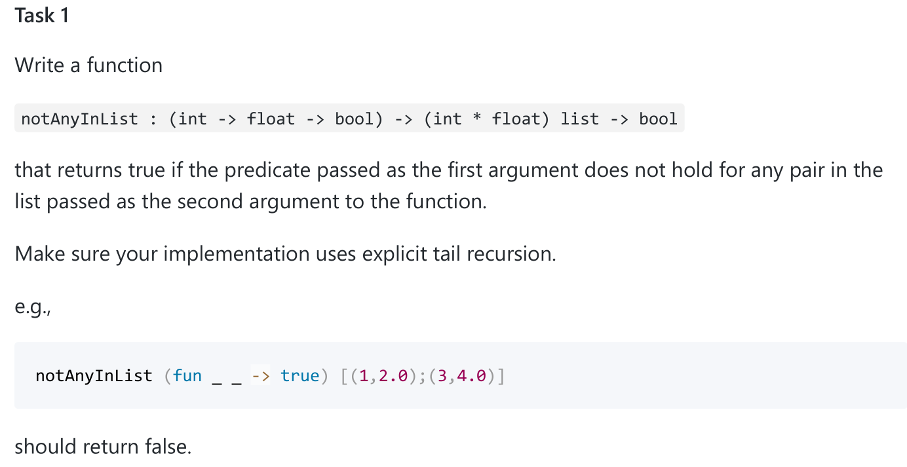 [P17]
- 问题描述：编写一个函数 notAnyInList，它接受一个函数作为谓词和一个整数与浮点数对的列表，返回一个布尔值，表示这个谓词是否对列表中的任何元素都不成立。
- 编码思路：使用尾递归遍历列表，检查每个元素是否满足谓词。如果有任何一个元素满足谓词，则立即返回 false；如果列表为空或所有元素都不满足谓词，则返回 true。
- 代码作用：这段代码定义了一个递归函数 checkPairs 来逐个检查列表中的元素，并在发现谓词成立的元素时返回 false，否则继续递归。如果遍历完整个列表没有找到满足条件的元素，则返回 true。
notAnyInList : (int -> float -> bool) -> (int * float) list -> bool
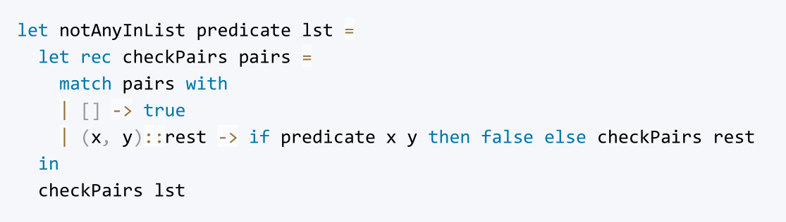 [P17]
- 函数定义：notAnyInList 函数接受两个参数，一个是谓词函数 predicate（接受一个 int 和一个 float 并返回一个 bool），另一个是一个元组列表 lst（每个元组包含一个 int 和一个 float）。
- 尾递归函数 checkPairs：这是一个内部函数，用于递归地检查列表中的每一对元素。
- 当 pairs 为空列表 [] 时，返回 true。这意味着列表中没有任何元素满足谓词条件。
- 当 pairs 为 (x, y)::rest 形式时，即列表中至少有一个元素 (x, y)，函数检查谓词 predicate x y 是否为 true。如果是，返回 false（表示找到了一个满足谓词的元素），否则递归调用 checkPairs 继续检查剩余的元素。
- 结果：调用 checkPairs 函数并传递 lst 作为参数。这个函数最终返回一个布尔值，表示谓词是否对列表中任何元素都不成立。
Task 2 add head as last element if
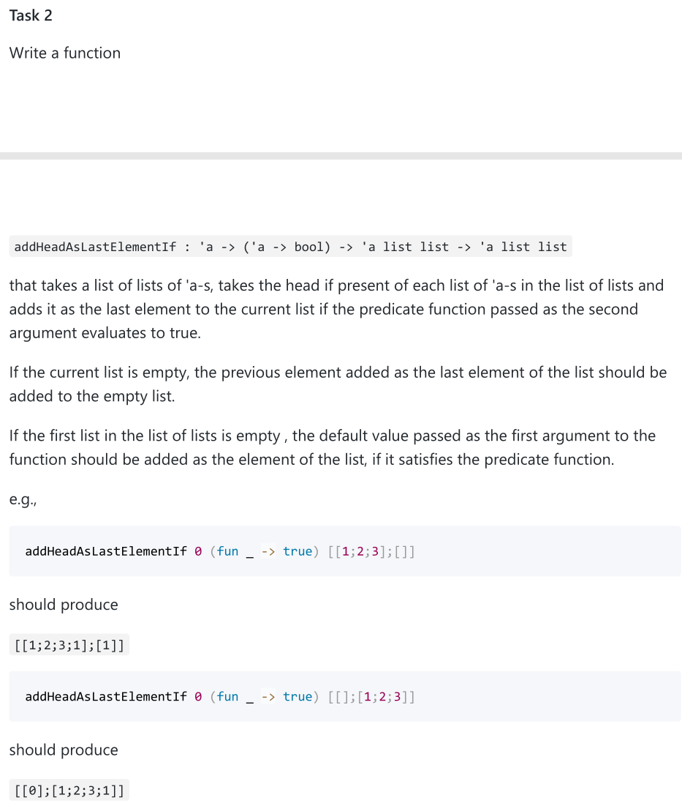 [P17]
- 问题描述：实现一个函数 addHeadAsLastElementIf，这个函数处理一个列表的列表，根据给定的谓词条件，将每个子列表的头元素（如果存在）添加到其尾部。
- 编码思路：使用递归遍历整个列表的列表。对于每个子列表，检查其头元素是否满足谓词条件。如果满足，则将头元素添加到列表尾部。处理空列表时，使用先前的元素或默认值。
- 代码作用：这段代码首先定义了一个递归函数 processLists，用于遍历和处理每个子列表。它根据谓词条件和当前处理的元素来更新每个子列表，并在必要时添加元素。
addHeadAsLastElementIf 0 (fun _ -> true) [[1;2;3];[]]
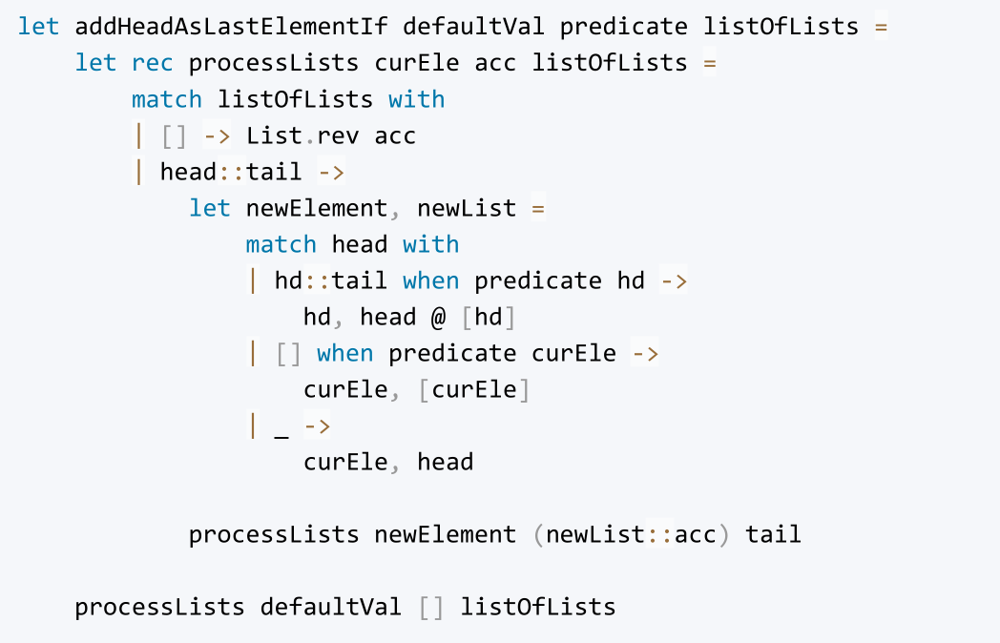 [P18]
- 函数定义：addHeadAsLastElementIf 函数接受三个参数：一个默认值 defaultVal，一个谓词函数 predicate，以及一个列表的列表 listOfLists。
- 尾递归函数 processLists：这是一个内部函数，用于递归地处理列表的列表。
- 如果 listOfLists 为空，返回累积的结果 acc 的逆序（因为在递归过程中元素被添加到了 acc 的前面）。
- 对于非空 listOfLists（形式为 head::tail），函数处理当前头部列表 head 并更新累积器 acc。
- 在处理 head 时，根据其内容和谓词条件更新 newElement 和 newList，然后递归调用 processLists。
- 结果：调用 processLists 函数并传递 defaultVal、空列表 [] 和 listOfLists 作为参数。这个函数最终返回一个更新后的列表的列表。
Task 3 使用List.fold完成Task 2
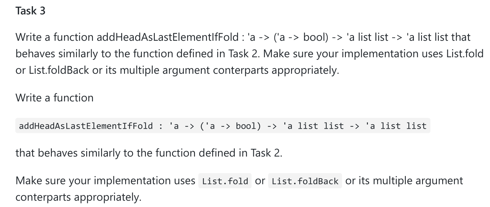 [P19]
- 问题描述：与任务 2 类似，但要求使用 List.fold 或 List.foldBack 实现。
- 编码思路：使用 List.fold 函数来遍历列表的列表，累积一个结果列表，同时保持跟踪上一个处理的元素。对于每个子列表，根据谓词条件进行相应处理。
- 代码作用：这段代码利用 fold 函数来累积结果，并在遍历的过程中根据谓词条件更新每个子列表。它为每个非空子列表添加头元素到尾部，或者为空列表添加先前元素或默认值。
addHeadAsLastElementIfFold : 'a -> ('a -> bool) -> 'a list list -> 'a list list
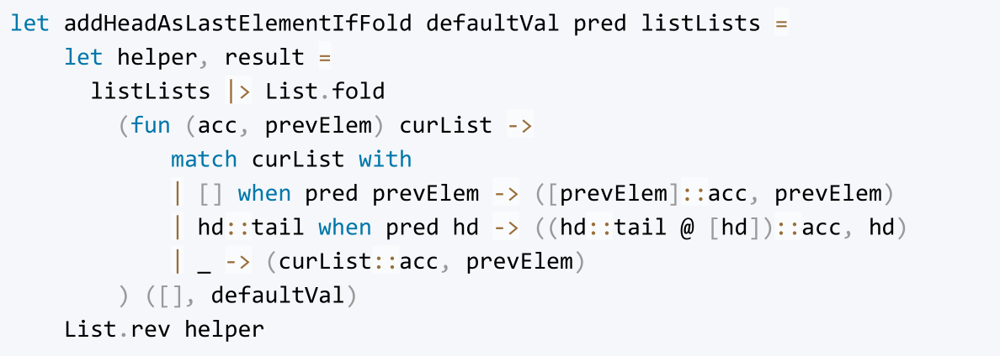 [P19]
- 函数定义：addHeadAsLastElementIfFold 采用 List.fold 来实现功能，类似于任务 2，但使用的是折叠（fold）技术。
- 使用 List.fold：
- List.fold 函数遍历 listLists，累积结果到 acc，同时维护一个“前一个元素” prevElem。
- 对于每个子列表 curList，根据其内容和谓词条件更新累积器 acc 和 prevElem。
- 如果 curList 为空且 prevElem 满足谓词，将 prevElem 添加到 acc。如果 curList 的头元素满足谓词，将其添加到 curList 的尾部并更新 acc。
- 结果：折叠操作完成后，helper 包含了最终的结果，但是逆序的，所以需要用 List.rev 将其反转。
Task 4 maxAndMax2InTree，找出一个树型数据结构中的最大值和次大值。
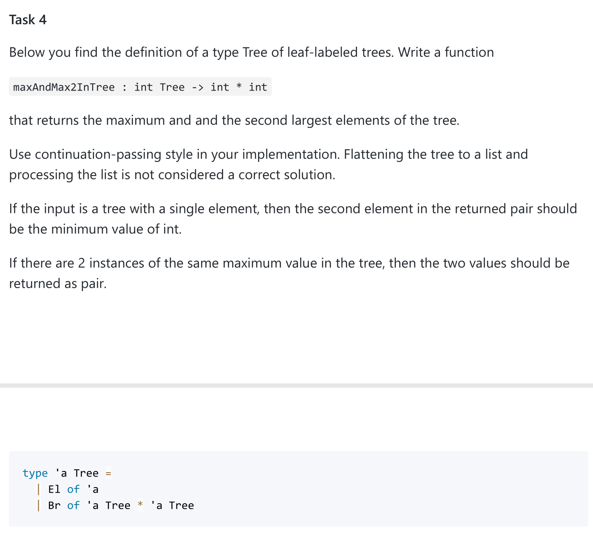 [P19]
- 问题描述：编写一个函数 maxAndMax2InTree，找出一个树型数据结构中的最大值和次大值。
- 编码思路：使用续延传递风格来遍历树。递归地处理每个分支，并使用一个续延函数来计算和比较左右分支的最大值和次大值。
- 代码作用：这段代码通过递归遍历树的每个节点，使用续延函数来维护和更新最大值和次大值。它能够高效地找出树中的最大值和次大值，即使树结构非常复杂。
maxAndMax2InTree : int Tree -> int * int
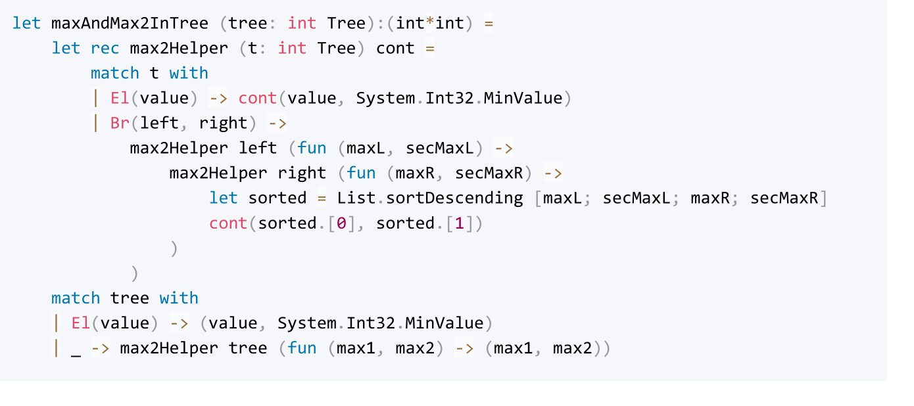 [P20]
- 函数定义：maxAndMax2InTree 接受一个 int Tree 类型的树，并返回一个包含两个整数的元组（最大值和次大值）。
- 续延函数 max2Helper：
- 对于 El(value)，即树的叶子节点，直接使用续延 cont，将当前值和 int 的最小值作为参数传递给 cont。
- 对于 Br(left, right)，即树的分支节点，递归地处理左子树和右子树，并使用续延将计算结果传递下去。左右子树的最大值和次大值被排序，然后传递给 cont。
- 结果：函数首先检查 tree 是否为单一元素的树。如果是，直接返回该元素和 int 的最小值。否则，调用 max2Helper 并提供一个续延函数来处理结果。最终返回树中的最大值和次大值。